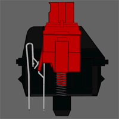

SWITCHES
When planning your custom keyboard build, the first thing you should decide is what switches you want to use. The switches are what give mechanical keyboards their "mechanical" name. There are a huge selection of different switches to choose, from the standard Cherry MX switches to the popular Holy Pandas. It might seem like a lot to choose from, but every switch falls under 1 of 3 types: Linear, Tactile, and Clicky.

Linear
Linear switches are the most common and popular type of switch, as well as the simplest. As you press the switch down it'll be smooth and consistent all the way until you bottom out. Linear switches are typically used for gaming where you might want to hit a switch in quick succession. They are also the quiestest switch as they don't have a bump or click that would create extra noise while typing.

Tactile
After the advent of the Holy Panda switches, Tactile switches have become increasingly more popular. Unlike the linear switch, tactile switches have a bump as you press the switch which gives feedback to let you know that the switch has been pressed and activated. Tactile switches are usually recommended for tasks such as typing because of that feedback.

Clicky
Clicky switches are the loudest of the three, but thats the whole point. Just like tactile switches, clicky switches have a bump to let the user know when the switch has activated, but clicky switches also have an audible click to give an auditory cue as well. The main issue with clicky switches is the lack of customization available due to the construction, thus there aren't many produced.